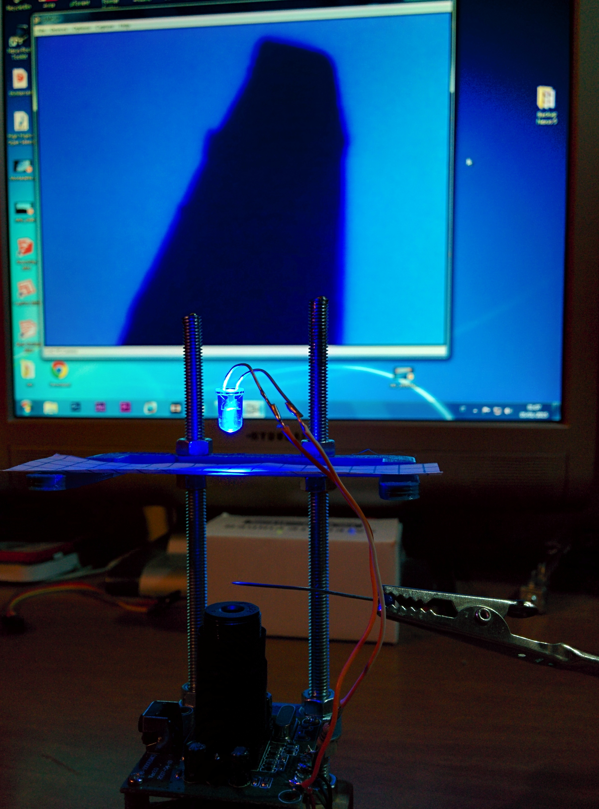
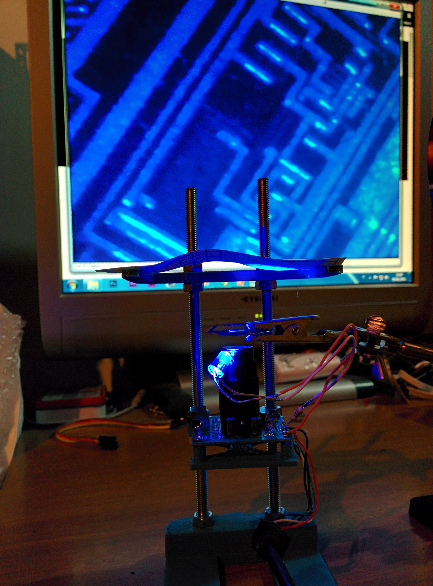
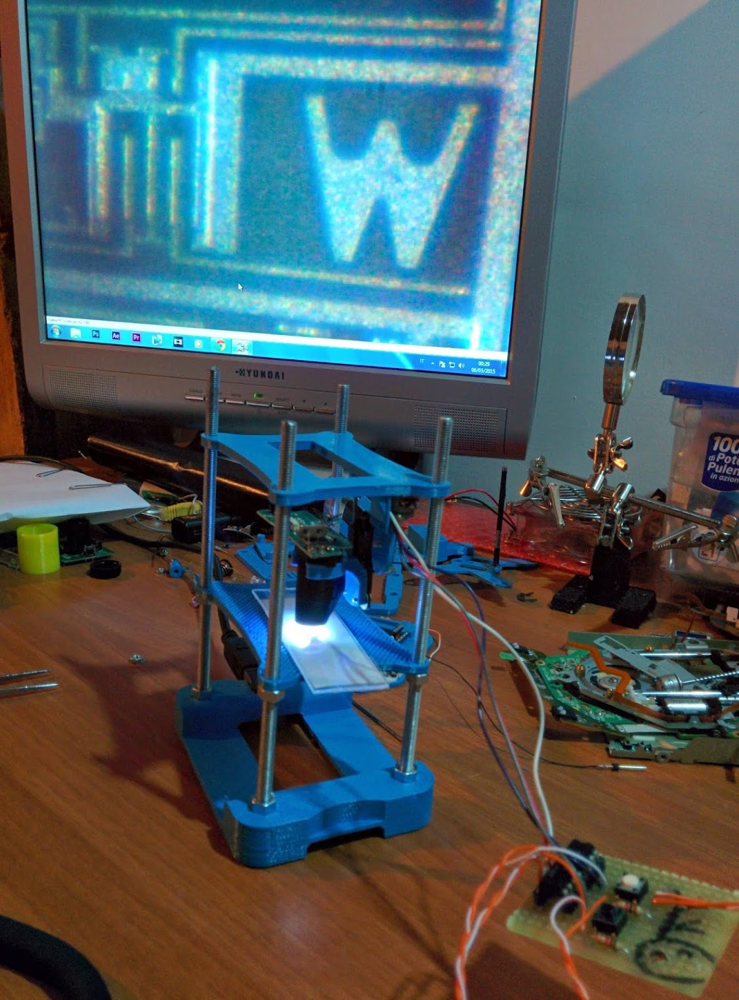

Using an old webcam I was able to do some interesting experiments. I tryed for example, to rotate the focusing optics, unscrewding it and fixing it upside down with hot glue. I noticed that approaching an object to the lenses, a zoomed image of it appears on the screen. I was exciting of that and I decided to build a 3D printed support to make better observations.
The 3D printed support is composed by some layers: the base layer, the target positioning layer and the wabcam layer. Because of the small aperture of the lense I added a bright LED in order to light up the target. The two images below show a needle tip and an integrated circuit tracks: a single track has a diameter of few micrometers.
 I patiently designed a motorised focusing system with a floppy driver stepper motor and an Arduino. Unfortunately I broke the webcam (yeah, I am very careless...) and I haven't had yet the time to build a better microscope with a better cam.
